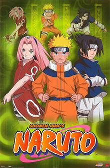

المحقق كونان
(باليابانية: 名探偵コナン، تُنطق ميهتانتيه كۆنان أي المحقق العظيم كونان) وتُترجم رسميًا إلى المُحقق كونان هي سلسلة مانغا للكاتب غوشو أوياما حُوِّلت إلى مسلسل أنمي وحلقات أوفا وأفلام أنمي وألعاب فيديو ووسائط أخرى يابانية بدأت المانغا في 18 يونيو عام 1994 وتحولت إلى مسلسل أنمي في 8 يناير 1996 في اليابان. واستمر إصدار الفصول حتى وصلت إلى أكثر من 1000 فصلٍ واضعةً المانغا الخاصة بالمحقق كونان في المرتبة الـ 22 في ترتيب المانغا الأكثر إصدارًا. فحققت المانغا نجاحًا باهرًا بعدما وصلت عدد النسخ المبيعة في اليابان إلى أكثر من 120 مليون نسخة. ففي 8 أغسطس 2017 وصلت قائمة مجلدات المحقق كونان إلى الفصل 1000 من فصول السلسلة. تُنشر المانغا أسبوعيًّا في مجلة شونن سندي الأسبوعية منذ 18 يونيو 1994، ثم يتم إنتاج حلقات الأنمي الخاصة بها بواسطة استديو طوكيو موفي شينشا، ويُخرج الحلقات كينجي كوداما وياسويشيرو ياماموتو وتُعرض في اليابان على شبكة تلفزيون نيبون وقناة يوميأوري وقناة أنيماكس. أُذيعت الحلقة الأولى في 8 يناير 1996 وعرضت الحلقات بالتوالي إلى أن وصلت إلى أكثر من 974 حلقة، وبذلك يحتل المركز الخامس عشر في قائمة أكثر الأنميات من حيث عدد الحلقات. يتم عرض حلقة واحدة من الأنمي أسبوعيًّا على شبكة تلفزيون نيبون إلا في حالات عرض الأفلام فإنها قد تتأجل إلى أسبوعين أو أكثر. بشكل عام، تبلغ مدة عرض كل حلقة حوالي 25 دقيقة، لكن في بعض الأحيان يعرض الاستديو بعض الحلقات الطويلة، والتي تعرف باسم (الحلقات الخاصة). وهي حلقات تتبع سلسلة قائمة حلقات المحقق كونان لكنها تمتاز بطول مدة عرضها، بحيث تتراوح ما بين 45 دقيقة إلى ساعتين من الزمن. ومنذ بداية عرض المحقق كونان على التلفاز في عام 1996، عُرِضَ حتى الآن ما يقارب 31 حلقة خاصة، كانت أول تلك الحلقات هي حلقة (الحلقة 43 - اختطاف كونان إدوغاوا) والتي عُرِضَتْ بتاريخ 8 أبريل 1996، بينما آخره تلك الحلقات هي (الحلقة 928 - رحلة المدرسة القرمزية) والتي عُرِضَتْ بتاريخ 12 يناير 2019. كما بُني على السلسلة 23 فيلمًا، التي عادة لا يكتبها المؤلف ذاته (غوشو أوياما) بل هناك كتاب آخرون يشاركون في تأليف الفيلم؛ وأحيانًا يقتصر الفيلم الواحد على مؤلف واحد، ويتم الإعلان عنها سنوياً في شهر نوفمبر ويتم طرحها في شهر أبريل. اُفتتحت سلسلة الأفلام بصدور أولها بعنوان (العد التنازلي لناطحة السحاب) في 19 أبريل 1997، وبعدها تم إصدار باقي الأفلام بمعدل فيلم لكل عام، وكان آخر فيلم من سلسلة الأفلام قد تم إصداره في 12 أبريل 2019 بعنوان (القبضة اللازوردية). كما تم إصدار 12 حلقة فيديو قصيرة (OVA) تبلغ مدة عرض كل حلقة حوالي 25 دقيقة.
 اقراء المزيد
اقراء المزيد
اسمع الى الاغنية
:بصيغة الفيديو
:بصيغة الصوت
ناروتو
(باليابانية: ナルト وبالروماجي: NARUTO) هو عنوان سلسلة مانجا يابانيّة منتهية ألفها ورسمها ماساشي كيشيموتو. تدور أحداث القصة حول النينجا المراهق ناروتو أوزوماكي الذي وجد نفسه منبوذًا من قبل سكان قريته بسبب الكيوبي الذي بداخله، لذلك وضع نصب عينيه أن ينال لقب الهوكاجي وهو اللقب الذي يُطلق على قائد القرية وأقوى نينجا فيها، لينال احترام واعتراف الجميع. صدرت المانجا في اليابان أول مرة عام 1999م بواسطة شركة شوئيشا في العدد الثالث والأربعين من مجلتها شونين جامب الأسبوعية. وهي مقتبسة أساسًا من كوميك ون شوت لمؤلفه كيشيموتو والتي نشرت في أغسطس 1997م في مجلة أكامارو جمب. حتى الآن تم إصدار 70 مجلدًا من المانجا في اليابان، وسيكون المجلد الحادي والسبعين آخر مجلد في المانجا. تُعد سلسلة ناروتو من أكثر السلاسل مبيعًا في العالم؛ حيث تم بيع حوالي 100 مليون نسخة في اليابان. في أمريكا الشمالية قامت شركة فز ميديا بترخيص المانجا وتم نشرها باللغة الإنجليزية في مجلة شونين جمب إلى جانب أنه تم بث حلقات الأنمي والأفلام ومعظم حلقات الأوفا. وفي الولايات المتحدة ظهرت السلسلة عدة مرات في قائمة كتب الولايات المتحدة الأمريكية اليوم، وفاز المجلد الحادي عشر بجائزة كويل في عام 2006م. وقد أشاد متابعو السلسلة بالتوازن بين القتال والكوميديا، كما أبدوا إعجابهم بالسمات المميزة لشخصيات مانغا ناروتو. في وقت لاحق، قامت تلفزيون طوكيو وستديوهات بييرو بتحويل المانجا إلى أنمي وأذيع لأول مرة في اليابان على تلفزيون طوكيو يوم 3 أكتوبر 2002م. الجزء الأول من الأنمي صدر باسم ناروتو ويتكون من 220 حلقة، وجاء الجزء الثاني منه تحت اسم ناروتو شيبودن الذي انطلق بثه في 15 فبراير 2007م وقد بلغ عدد حلقاته 500 حلقة، وفضلًا عن ذلك تم إصدار 9 أفلام لسلسلة ناروتو وعدة حلقات أوفا. كما صدرت أنواع أخرى من المنتجات المتعلقة بهذه السلسلة وتشمل الروايات القصيرة، وألعاب الفيديو وبطاقات التبادل. يقوم مركز الزهرة بدبلجة هذا الأنمي إلى العربية. حيث تم دبلجة أول 52 حلقة منه في موسم أول وعُرض على قناة سبيس باور وسبيس تون عام 2009 بالتزامن مع انطلاق بثها التجريبي وقد عرضت القناة الموسم الثالث حتى الحلقة 130 وتوقف بسبب الأزمة الموجودة في سوريا التي اندلعت عام 2012 وهي حرب أهلية؛ وقد توقف كذلك دبلجة كل من ون بيس وسيف النار وسائر المسلسلات التي كانت تعرض ذلك الوقت، لكنه اكتفى بدبلجة المحقق كونان فقط وذلك لشعبيته الكبرى من عالم الأنمي في الدول العربية. قامت خدمة بث الفيديو كرانشي رول بترخيص أنمي ناروتو شيبودن في العديد من الدول من ضمنها دول العالم العربي وعرضه بالدقتين القياسية والعالية مُترجمًا إلى اللغة الإنجليزية.
 اقراء المزيدببجي
بلاير أنونز باتل غراوندز المعروفة باسم ببجي PUBG (بالإنجليزية: PlayerUnknown's Battlegrounds) أو ساحات معارك اللاعبين المجهولين، هي لعبة جماعية على الانترنت ولعبة بقاء صدرت بتاريخ 23 مارس 2017، وهي متوفرة على أجهزة ويندوز، وإكس بوكس ون وبلاي ستيشن 4 وصدرت نسختان في أوائل سنة 2018 لمنصتي آي أو إس، وأندرويد من تطوير شركة تينسنت، والتي قامت بالتعاون مع شركة "بلوهول" لإصدار اللعبة على الهواتف المحمولة، وتعمل بنفس المحرك الذي تعمل به النسخة الأصلية. تم تطوير النسخة الأصلية من قبل شركة "بلوهول" على محرك أنريل إنجن 4. وهي تدعم اللغة العربية.
اقراء المزيد